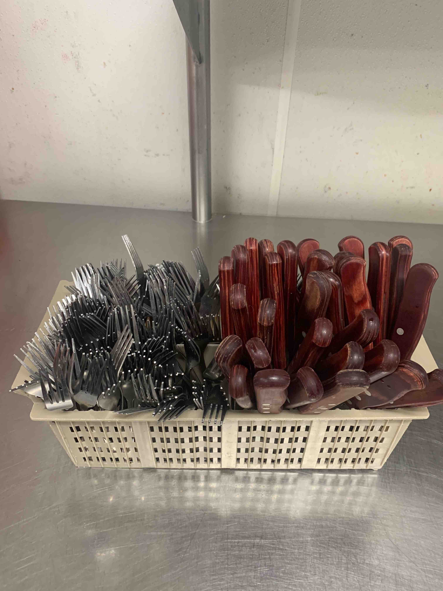
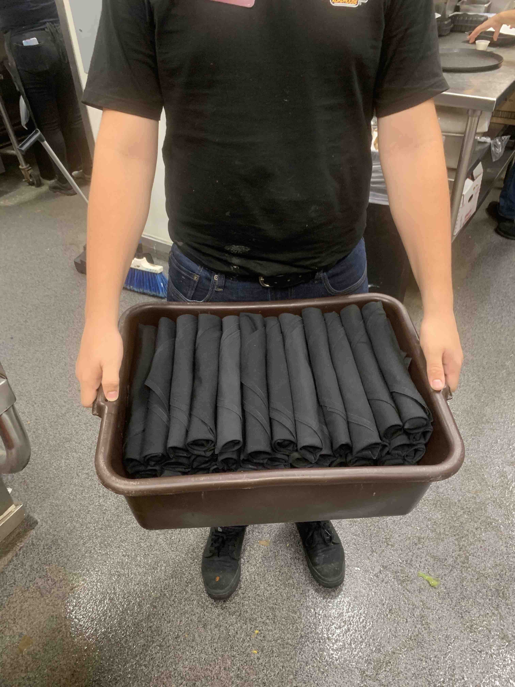

- Grab some linens from dry storage. (theres about 40 rolls to a bin, so you'll need that much!)
- Find unoccupied space on the back line.
- If there is unsorted silverware, make sure you are a team player and sort a bin!
- Clean sorted silverware goes into holders like so:

- Refer to the Front Sidework Guide if you have any questions about how to roll silverware.
- A finished bin should be neatly placed into a brown bus bin and shown to your front or back checker like so: (Thanks Mike!)

- Lastly, you will now neatly place your silverware into the metal silver bin behind table 412.
- If its full, you may leave your bin in the host stand